イベント
自然体験や環境保全活動など、さまざまなイベントを開催しています
タイプ：
カテゴリ：
対象：
イベント一覧
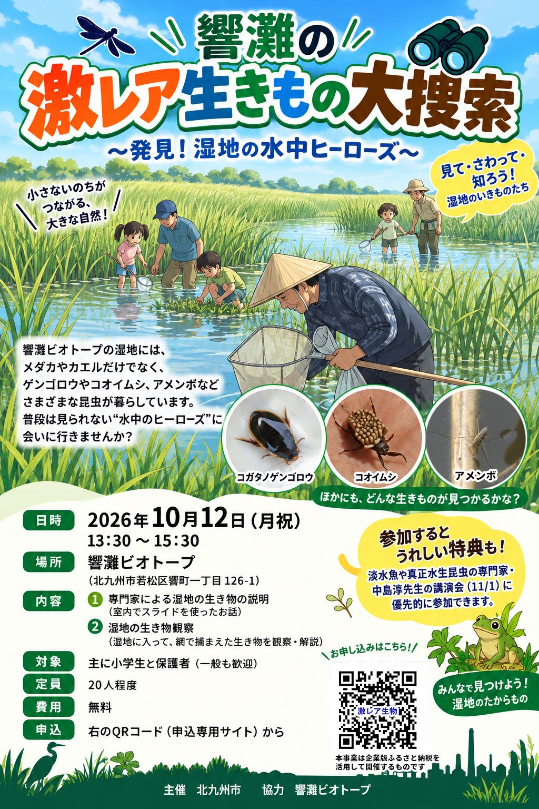
10月
12
イベント
「響灘の激レア生きもの大捜索」～発見！湿地の水中ヒーローズ～
響灘ビオトープ（若松区）
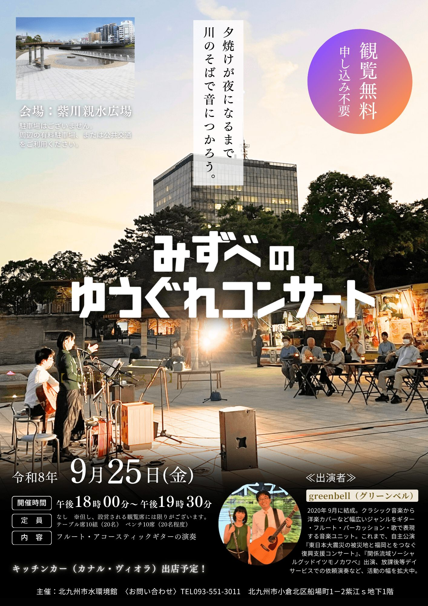
9月
25
イベント
9/25（金）みずべのゆうぐれコンサート
紫川親水広場（小倉北区）

7月
18
イベント
夏の企画展「世界のカブトムシ・クワガタ展～王者たちの素顔～」
北九州市ほたる館
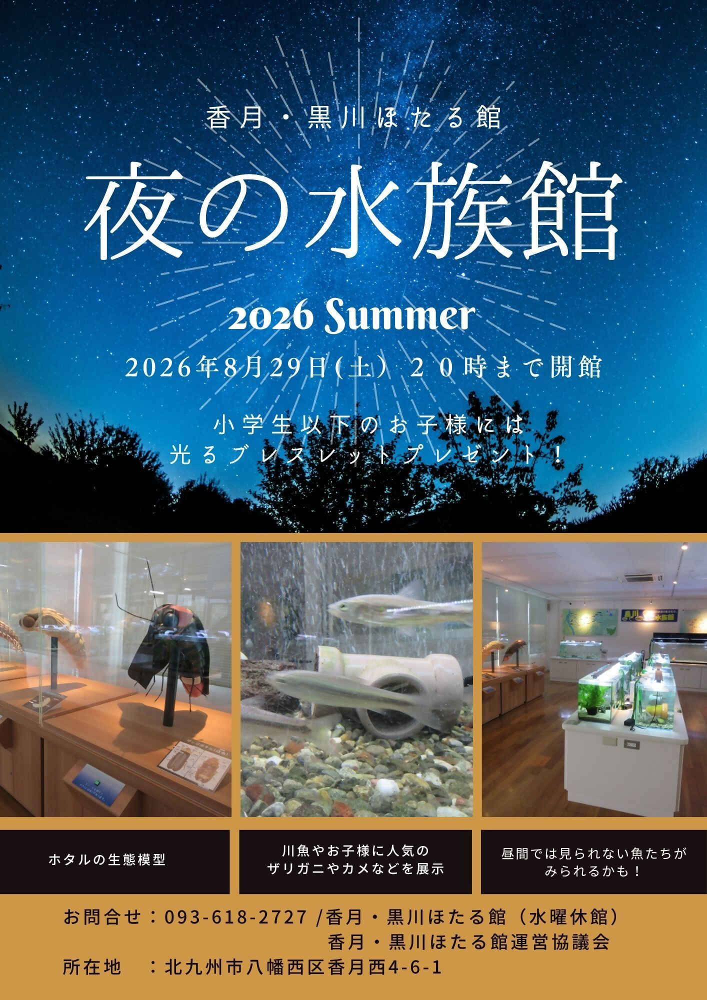
8月
29
イベント
8/29(土) 一夜限りの「夜の水族館」開館！
香月・黒川ほたる館（八幡西区）

9月〜
通年
プロジェクト
【参加企業募集】地域とともに曽根干潟・朽網川の自然を守る環境保全活動
東朽網校区（曽根干潟、朽網川ほか）

7月
8
イベント
自然との共生を企業の力に― ネイチャーポジティブ経営の可能性
北九州メッセ

11月
3
プロジェクト
アロマ祭りプロジェクト2026 ～香りからはじまるネイチャーポジティブ～
響灘緑地（グリーンパーク）

7月
15
プロジェクト
希少水生植物「ガシャモク」の域外保全～ガシャモクを未来へつなぐために～
お糸池（小倉南区）

7月
14
イベント
【最新技術が集結】Global Nature Positive Summit「NATURE TECH!」開催
熊本市
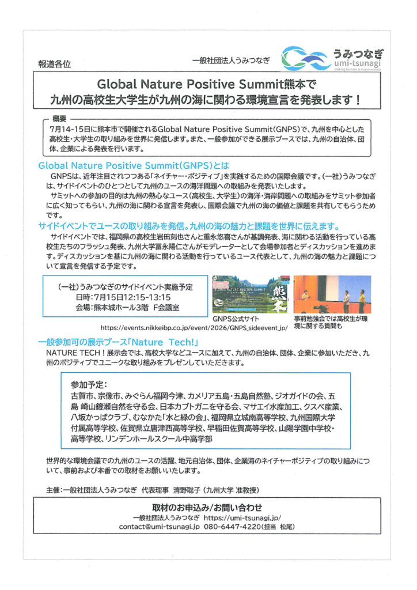
7月
15
イベント
【熊本開催】一般社団法人うみつなぎ主催 Global Nature Positive Summit 2026 サイドイベント
熊本市
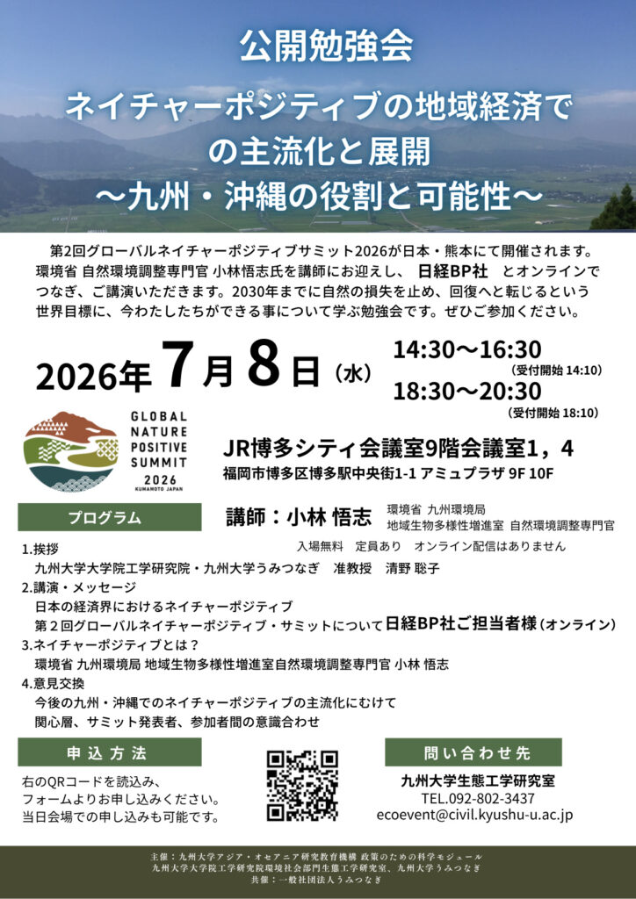
7月
8
イベント
【参加者募集】公開勉強会「ネイチャーポジティブの地域経済での主流化と展開～九州・沖縄の役割と可能性～」を開催します
福岡市
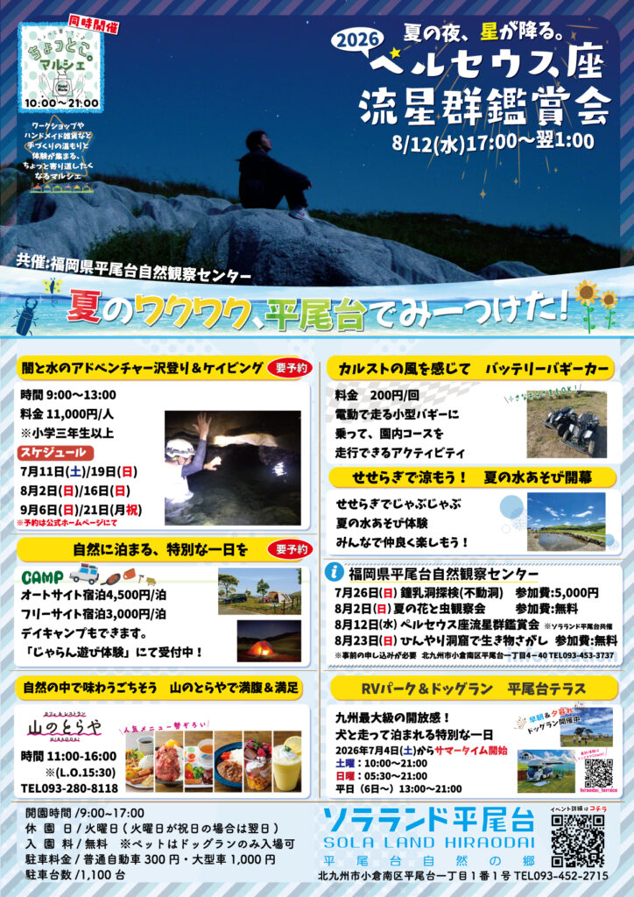
8月
12
イベント
ペルセウス座流星群鑑賞会
ソラランド平尾台
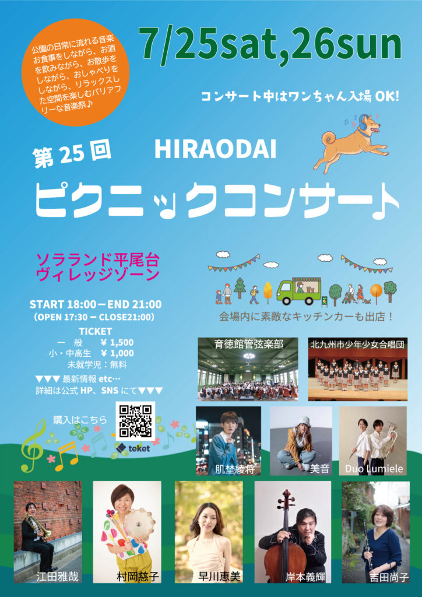
7月
25
イベント
HIRAODAI ピクニックコンサート
ソラランド平尾台 ヴィレッジゾーン
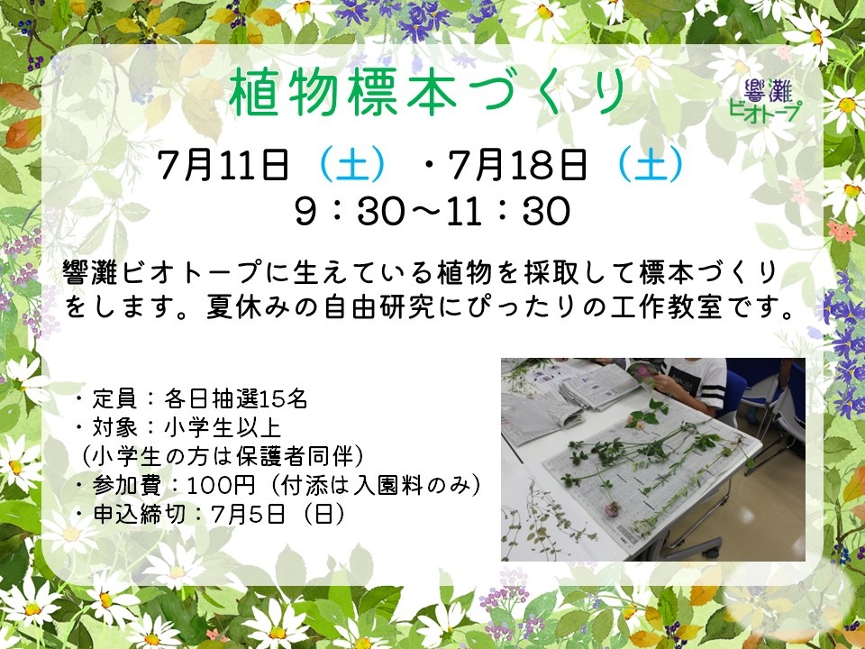
6月
25
イベント
植物標本づくり
響灘ビオトープ（若松区）
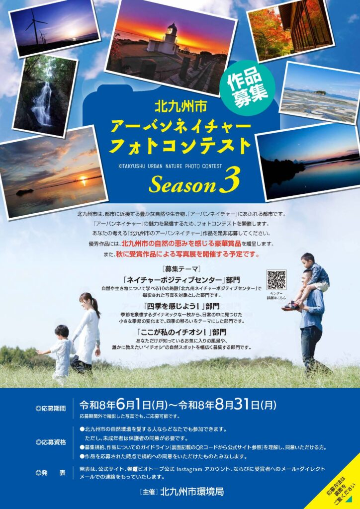
6月
1
イベント
北九州市アーバンネイチャーフォトコンテストSeason3
北九州市内
 すべて
すべて
2026年1月のイベント一覧
北九州市内

11月
15
すべて
北九州ネイチャーポジティブ経営シンポジウムを開催しました
北九州市
すべて
2025年10～11月のイベント一覧
北九州市内

9月
2
イベント
バードフェスティバル in 北九州
高塔山・響灘ビオトープ
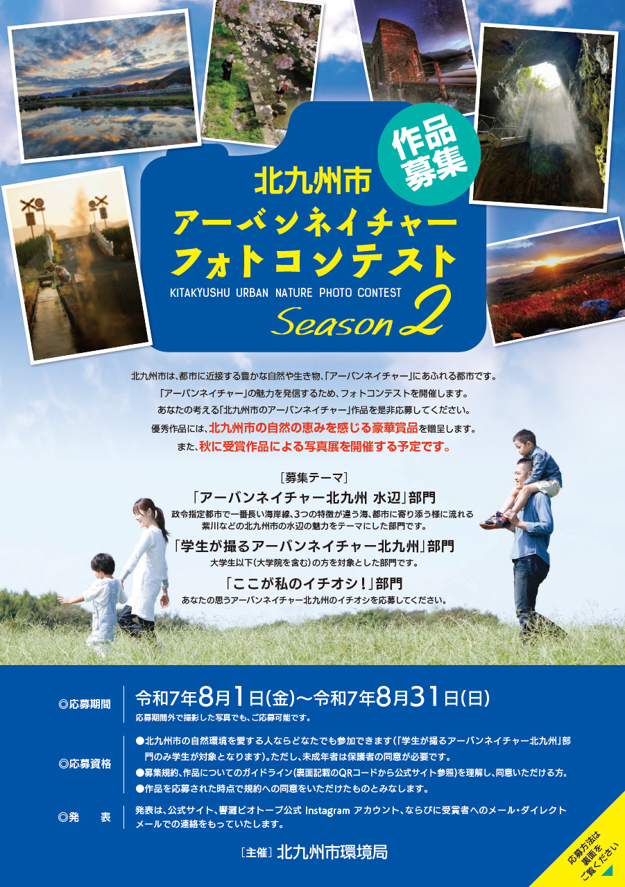
8月
1
イベント
北九州市アーバンネイチャーフォトコンテスト Season2
北九州市内
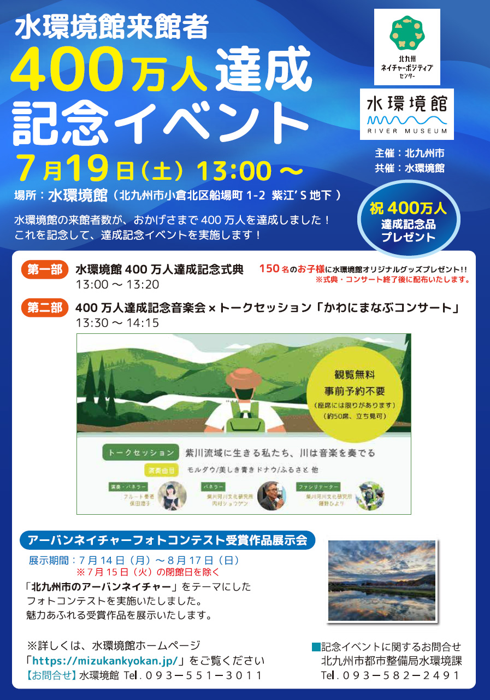
7月
11
イベント
水環境館400万人達成記念イベント
水環境館（小倉北区）
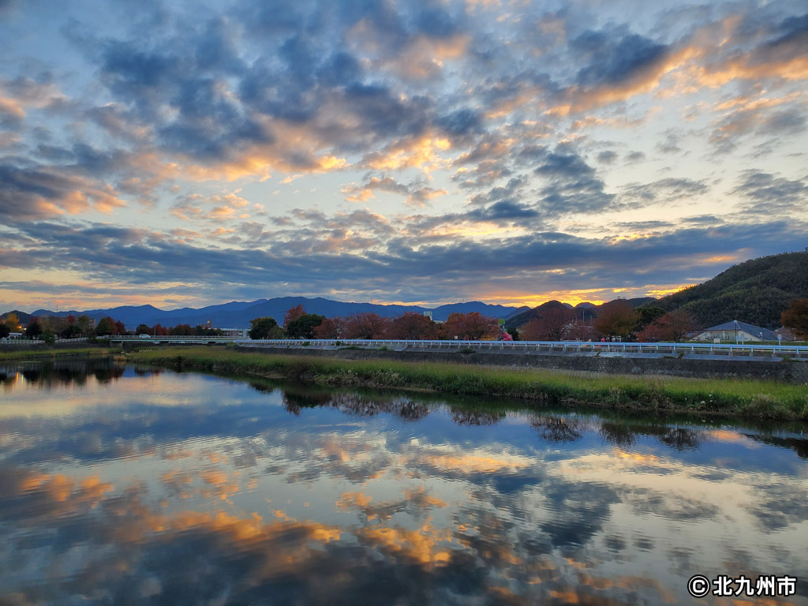
すべて2025年7～8月のイベント一覧
北九州市内
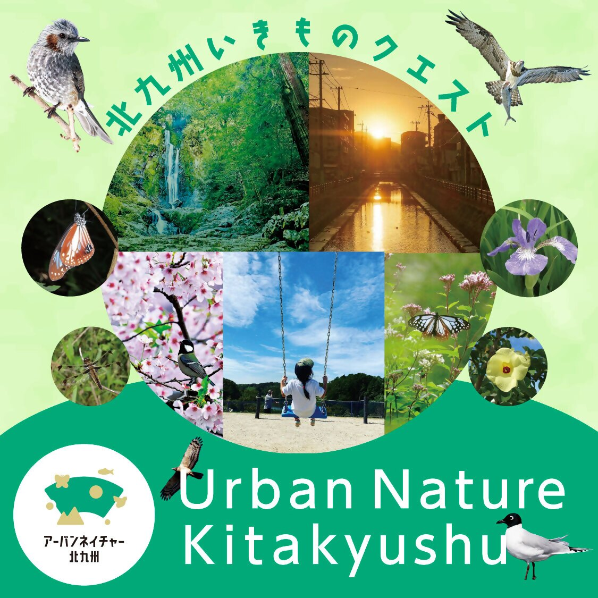
6月
1
イベント
アーバンネイチャー北九州いきものクエスト（Biome）を実施します！
北九州市内

5月
21
イベント
夜間特別開園！「山田ほたる祭り2025」開催！
山田緑地（小倉北区）
 すべて
すべて
2025年5～6月のイベント一覧
北九州市内